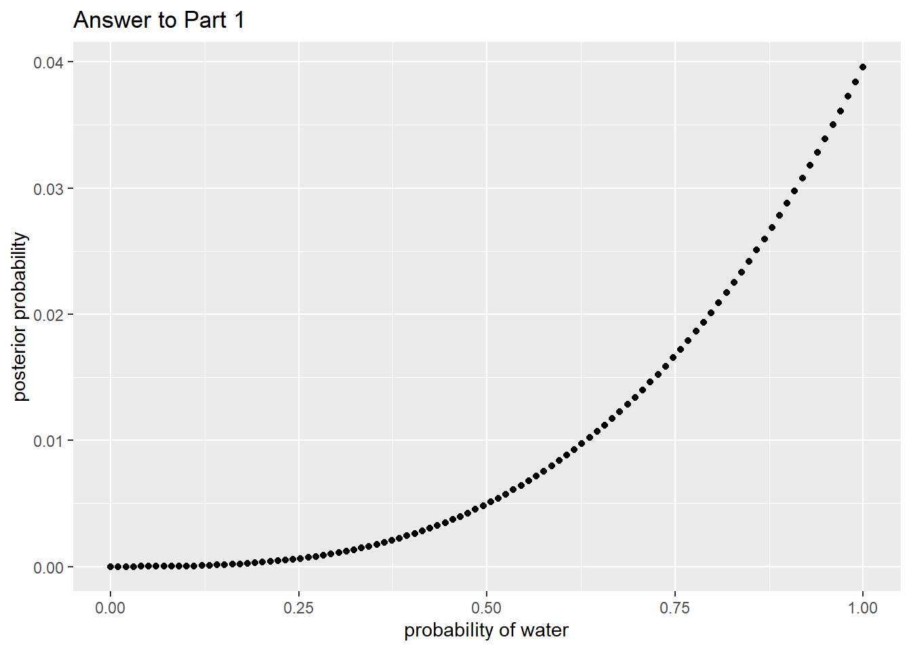
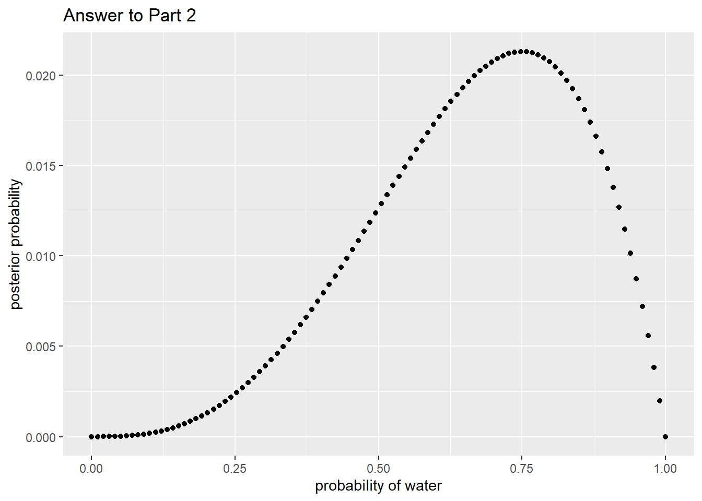
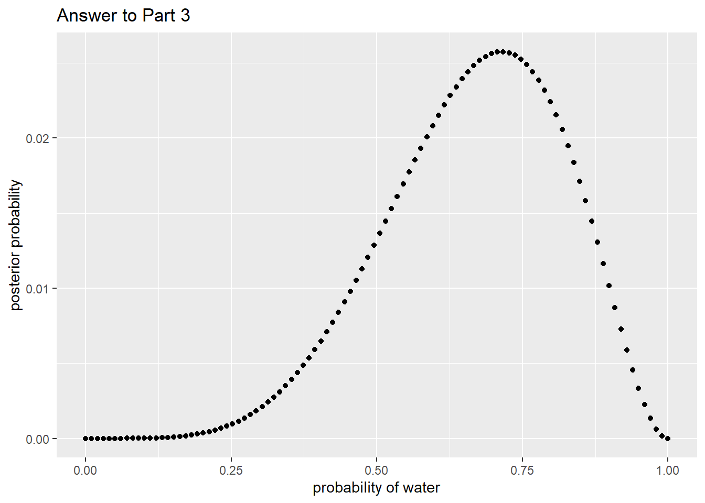
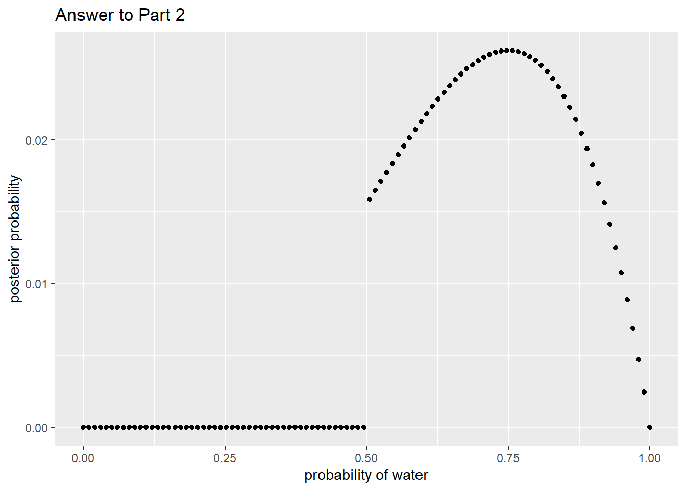
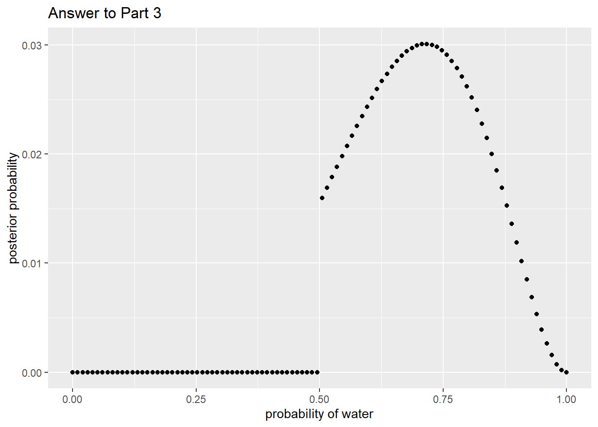
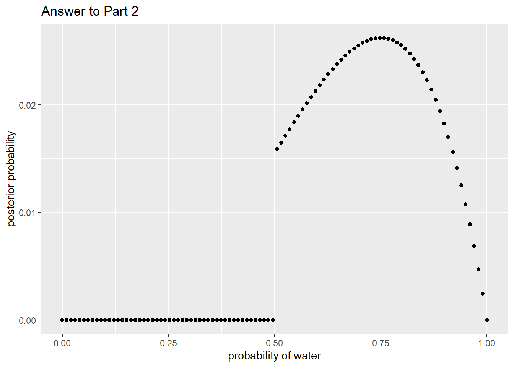
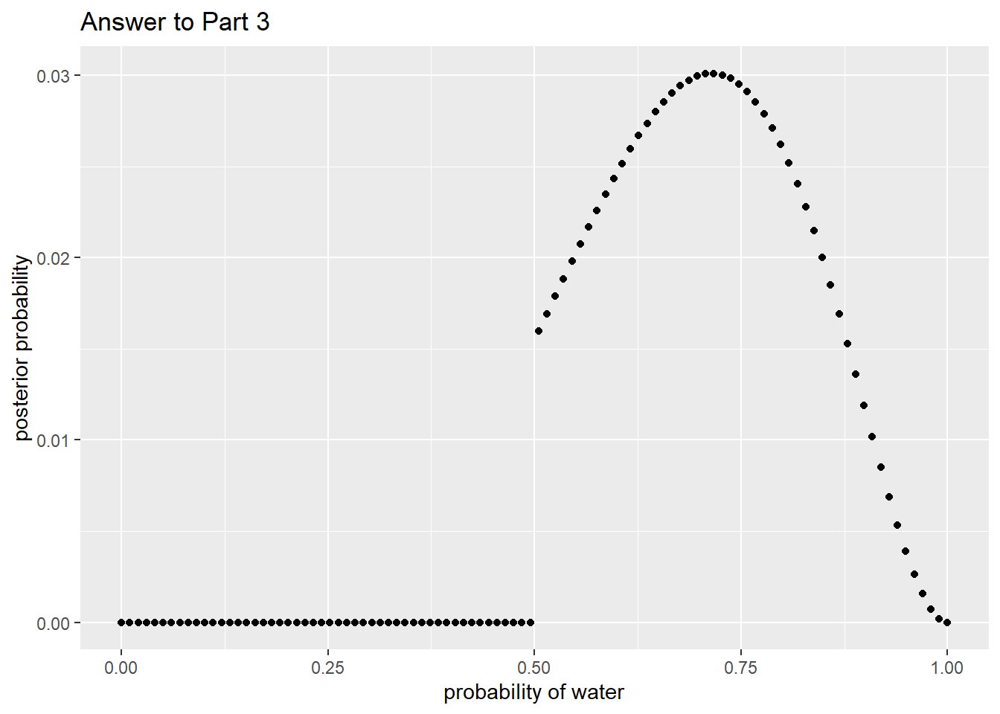

Chapter 2 Small Worlds and Large Worlds
2.1 Chapter Notes
I haven’t written chapter notes for the first five chapters.
2.2 Questions
2E1
Question
Which of the expressions below correspond to the statement: the probability of rain on Monday?
- Pr(rain)
- Pr(rain|Monday)
- Pr(Monday|rain)
- Pr(rain,Monday)/ Pr(Monday)
Answer
Numbers (2) and (4) are equivalent, and both have the meaning “the probability of rain, given that it is Monday.”
2E2
Question
Which of the following statements corresponds to the expression: Pr(Monday|rain)?
- The probability of rain on Monday.
- The probability of rain, given that it is Monday.
- The probability that it is Monday, given that it is raining.
- The probability that it is Monday and that it is raining.
Answer
The expression should be read “the probability of it being Monday, given that there is rain,” which is (3).
2E3
Question
Which of the expressions below correspond to the statement: the probability that it is Monday, given that it is raining?
- Pr(Monday|rain)
- Pr(rain|Monday)
- Pr(rain|Monday) Pr(Monday)
- Pr(rain|Monday) Pr(Monday)/ Pr(rain)
- Pr(Monday|rain) Pr(rain)/ Pr(Monday)
Answer
Number (1) is the probability that it is Monday, given that it is raining. Number (4) is equivalent by Bayes’ rule.
2E4
Question
The Bayesian statistician Bruno de Finetti (1906–1985) began his 1973 book on probability theory with the declaration: “PROBABILITY DOES NOT EXIST.” The capitals appeared in the original, so I imagine de Finetti wanted us to shout this statement. What he meant is that probability is a device for describing uncertainty from the perspective of an observer with limited knowledge; it has no objective reality.
Discuss the globe tossing example from the chapter, in light of this statement. What does it mean to say “the probability of water is 0.7?”
Answer
It’s very fun that the question “what do we mean when we talk about probability” is listed as an easy question.
Bruno de Finetti was a major figure in the subjective Bayesian school. For de Finetti, when someone says “the probability of water is 0.7” they are expressing something about their belief. Maybe that they believe the toy globe is 70% covered in water, or that the real globe is 70% covered in water. Maybe they are expressing something about their expectation for the next toss of the globe. Sometimes subjective Bayesian statements of probability are described in terms of odds that someone would accept on a wager about the belief in question, but this isn’t core to the approach (maybe this comes from an overly literal reading of the Dutch Book arguments for the laws of probability).
2M1
Question
Recall the globe tossing model from the chapter. Compute and plot the grid approximate posterior distribution for each of the following sets of observations. In each case, assume a uniform prior for p.
- W, W, W
- W, W, W, L
- L, W, W, L, W, W, W
Answer

2M2
Question
Now assume a prior for p that is equal to zero when p < 0.5 and is a positive constant when p ≥ 0.5. Again compute and plot the grid approximate posterior distribution for each of the sets of observations in the problem just above.
Answer
 

2M3
Question
Suppose there are two globes, one for Earth and one for Mars. The Earth globe is 70% covered in water. The Mars globe is 100% land. Further suppose that one of these globes — you don’t know which — was tossed in the air and produced a “land” observation. Assume that each globe was equally likely to be tossed.
Show that the posterior probability that the globe was the Earth, conditional on seeing “land,” \(\text{Pr}(Earth | Land)\), is 0.23.
Answer
Using Bayes Theorem:
\[ \text{Posterior} = \frac{\text{ prior * probability of the data }}{\text{ average probability of the data }} \]
The numerator for our calculation will be the prior probability that the globe tossed was the Earth, multiplied by the likelihood of seeing land, assuming the globe tossed was the Earth: \(0.5 * 0.3\).
The denominator is the sum of these probabilities over each value of the prior. In this case, the prior probability of Mars * probability of seeing land given Mars + prior probability of the Earth * probability of seeing land given Earth: 0.5 * 1 + 0.5 * 0.3.
So we have \(\frac{ 0.5 * 0.3 } { 0.5 * 1 + 0.5 * 0.3 }\) which is
## [1] 0.2307692as required.
2M4
Question
Suppose you have a deck with only three cards. Each card has two sides, and each side is either black or white. One card has two black sides. The second card has one black and one white side. The third card has two white sides. Now suppose all three cards are placed in a bag and shuffled. Someone reaches into the bag and pulls out a card and places it flat on a table. A black side is shown facing up, but you don’t know the color of the side facing down.
Show that the probability that the other side is also black is 2/3. Use the counting method (Section 2 of the chapter) to approach this problem. This means counting up the ways that each card could produce the observed data (a black side facing up on the table).
Answer
We are looking for the posterior probability that we have chosen the black/black card (Card One), given that we see a black side facing up.
We assume for now that the chance of choosing each card is the same. That is that for every 1 way of choosing Card One, there is 1 way of choosing Card Two, and 1 way of choosing Card Three. Now we need to count up the number of ways of seeing a black side for each of the cards.
Card One (black/black) There are two ways of seeing a black side after choosing this card - we could lay side one face up, or side two.
Card Two (black/white) There is only one way of seeing a black side after choosing this card - we would need to lay side one face up.
Card Three (white/white) There are no ways of seeing a black side after choosing this card.
Our calculation is \(\frac{1 * 2}{1 * 2 + 1 * 1 + 1 * 0} = \frac{2}{2+1+0} = \frac{2}{3}\).
2M5
Question
Now suppose there are four cards: B/B, B/W, W/W, and another B/B. Again suppose a card is drawn from the bag and a black side appears face up. Again calculate the probability that the other side is black.
Answer
We are looking for the probability that we have chosen either Card One or Card Four.
Following the logic above, we get \(\frac{2 + 2}{2 + 2 + 1 + 0} = \frac{4}{5}\).
2M6
Question
Imagine that black ink is heavy, and so cards with black sides are heavier than cards with white sides. As a result, it’s less likely that a card with black sides is pulled from the bag. So again assume there are three cards: B/B, B/W, and W/W. After experimenting a number of times, you conclude that for every way to pull the B/B card from the bag, there are 2 ways to pull the B/W card and 3 ways to pull the W/W card. Again suppose that a card is pulled and a black side appears face up.
Show that the probability the other side is black is now 0.5. Use the counting method, as before.
Answer
We just replace the 1’s from 2M4 with the new relative number of ways of pulling each card:
- B/B: 1 way
- B/W: 2 ways
- W/W: 3 ways
Our calculation is \(\frac{1 * 2}{1 * 2 + 2 * 1 + 3 * 0} = \frac{2}{2+2+0} = \frac{1}{2}\).
2M7
Question
Assume again the original card problem, with a single card showing a black side face up. Before looking at the other side, we draw another card from the bag and lay it face up on the table. The face that is shown on the new card is white.
Show that the probability that the first card, the one showing a black side, has black on its other side is now 0.75. Use the counting method, if you can.
Hint: Treat this like the sequence of globe tosses, counting all the ways to see each observation, for each possible first card.
Answer
We are again looking for the probability that the first card we pulled was Card One (b/b), given the data (that we see one card with a black side and then one card with a white side).
we will use a table:
| Cards | Prior Count | Black Side Count | White Side Count | Posterior Count |
|---|---|---|---|---|
| Card One | 1 | 2 | 3 | 6 |
| Card Two | 1 | 1 | 2 | 2 |
| Card Three | 1 | 0 | 1 | 0 |
For each row, we derive the White Side Counts by adding up the number of ways to see a white side for the two cards left in the bag. E.g. if we pulled Card One first, we have one card remaining with two white sides, and one card remaining with one white side = 3 white sides.
Our probability that we first pulled Card One is then \(\frac{6}{6+2} = 0.75\) as required.
2H1
Question
Suppose there are two species of panda bear. Both are equally common in the wild and live in the same places. They look exactly alike and eat the same food, and there is yet no genetic assay capable of telling them apart. They differ however in their family sizes. Species A gives birth to twins 10% of the time, otherwise birthing a single infant. Species B births twins 20% of the time, otherwise birthing singleton infants. Assume these numbers are known with certainty, from many years of field research.
Now suppose you are managing a captive panda breeding program. You have a new female panda of unknown species, and she has just given birth to twins. What is the probability that her next birth will also be twins?
Answer
| Species | Prior Count | Twins Count | Posterior Count | Posterior Probability |
|---|---|---|---|---|
| Species A | 1 | 1 | 1 | 0.33 |
| Species B | 1 | 2 | 2 | 0.67 |
Probability of having twins is \(\text{probability of species } A * 0.1 + \text{probability of species } B * 0.2 = 1/3 * 0.1 + 2/3 * 0.2 = 1/6\).
2H2
Question
Recall all the facts from the problem above. Now compute the probability that the panda we have is from species A, assuming we have observed only the first birth and that it was twins.
Answer
This questions implies that there was an easier way of answering the first question.
In any case, we have already calculated that the probability of species A is 1/3.
2H3
Question
Continuing on from the previous problem, suppose the same panda mother has a second birth and that it is not twins, but a singleton infant. Compute the posterior probability that this panda is species A.
Answer
| Species | Prior Count | Twins Count | Singleton Count | Posterior Count | Posterior Probability |
|---|---|---|---|---|---|
| Species A | 1 | 1 | 9 | 9 | 0.36 |
| Species B | 1 | 2 | 8 | 16 | 0.64 |
The probability of species A is now 36%.
2H4
Question
A common boast of Bayesian statisticians is that Bayesian inference makes it easy to use all of the data, even if the data are of different types. So suppose now that a veterinarian comes along who has a new genetic test that she claims can identify the species of our mother panda. But the test, like all tests, is imperfect. This is the information you have about the test:
- The probability it correctly identifies a species A panda is 0.8.
- The probability it correctly identifies a species B panda is 0.65.
The vet administers the test to your panda and tells you that the test is positive for species A. First ignore your previous information from the births and compute the posterior probability that your panda is species A. Then redo your calculation, now using the birth data as well.
Answer
Using test results alone:
| Species | Prior Count | Test for A | Posterior Count | Posterior Probability |
|---|---|---|---|---|
| Species A | 1 | 8 | 8 | 0.8 |
| Species B | 1 | 2 | 2 | 0.2 |
Using births and test results:
| Species | Prior Count | Twins Count | Singleton Count | Test for A | Posterior Count | Posterior Probability |
|---|---|---|---|---|---|---|
| Species A | 1 | 1 | 9 | 8 | 72 | 0.69 |
| Species B | 1 | 2 | 8 | 2 | 32 | 0.31 |